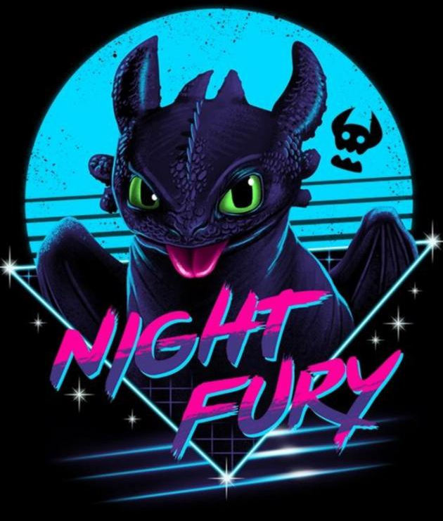
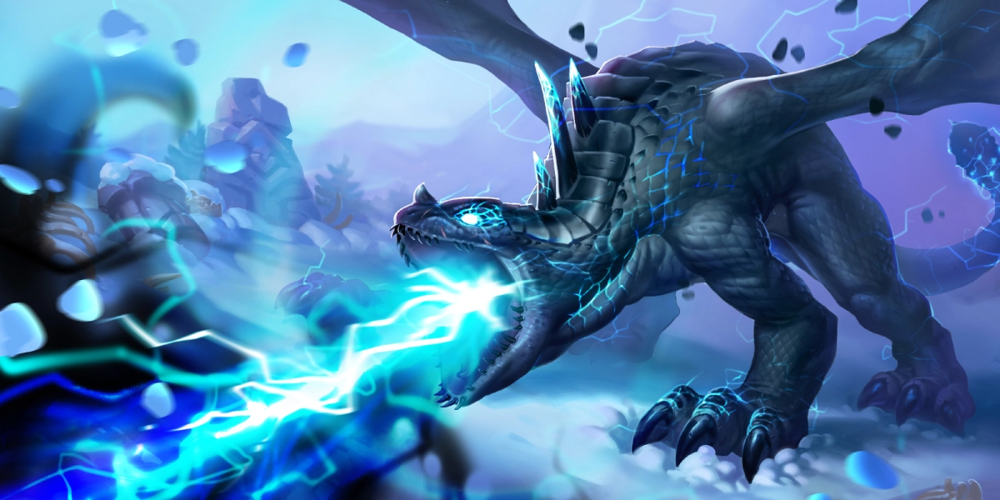
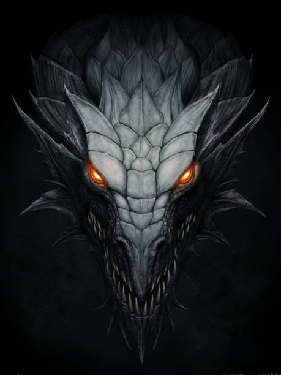

Night FuryStrike Class DragonNight Furies are extremely rare creatures. They are very stealthy
and intelligent.

SeashockerTidal Class DragonSupremely furtive, Seashockers share attributes with many of the the
ocean's most extraordinary
creature: the morphology of a Manta Ray, the sonar of a dolphin, and the bioluminescence of a deep
dweller.

StormcutterSharp Class DragonThe Stormcutter is a massive dragon with four wings, extremely
dexterous claws, and a huge frill
behind its head.